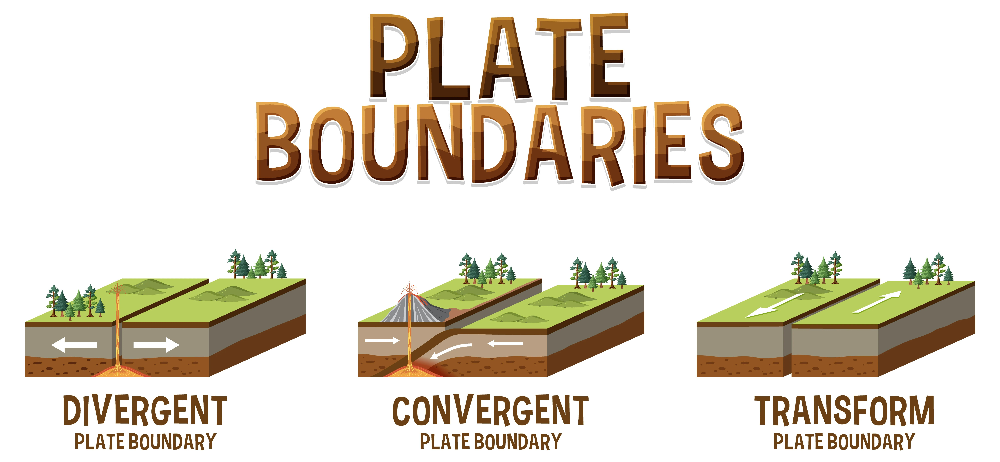
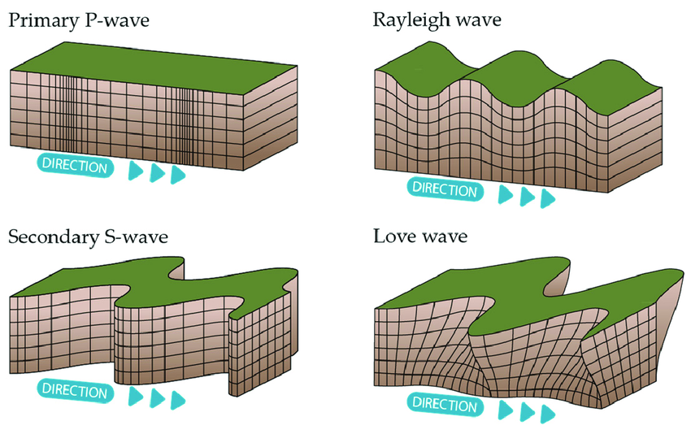
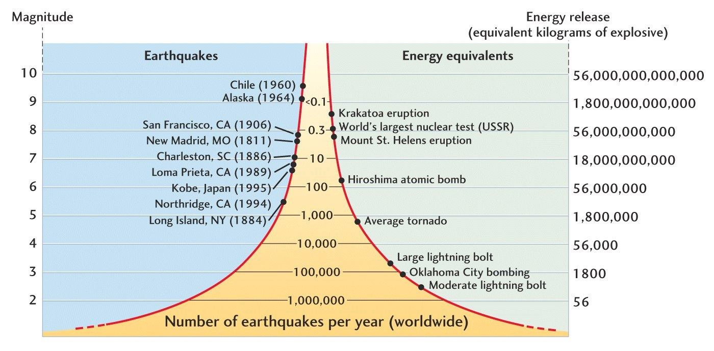

Number of modules: 2
Complete all the modules to earn badges
No progress!
An earthquake is when the ground shakes suddenly. This happens because energy that was trapped inside the Earth is released all at once. The energy spreads as waves, which can make buildings, roads, and bridges shake or even break. That’s why earthquakes can sometimes cause big damage. It’s like the Earth is releasing its pressure in a very strong way.
Most earthquakes happen because large blocks of rock move and slide past each other along a crack in the Earth called a fault. The exact place deep inside the Earth where the earthquake begins is called the hypocenter (or focus). The spot on the ground directly above it is called the epicenter. The epicenter is usually where the shaking feels the strongest.
Earthquakes can occur anywhere in the world, but they are more common in places where the Earth’s tectonic plates meet. These plates are always moving, and the stress between them leads to earthquakes. Learning about earthquakes is very important, because it helps people stay prepared and safe. By knowing what causes them, we can reduce risks and respond better when they happen.
Hey, do you know the Earth’s surface is not one big piece? It’s actually made of huge pieces called tectonic plates. These plates are like giant puzzle pieces that fit together and cover the Earth. They are always moving, but very slowly, so we don’t feel it every day. Sometimes they push, pull, or slide against each other. When this happens, the Earth’s surface changes, and that’s when earthquakes often happen.
There are three main ways these plates move. When they collide with each other, it’s called a convergent boundary, and it can even form mountains. When they move apart, it’s called a divergent boundary, and new land or ocean floor can appear. When they slide past each other sideways, it’s called a transform boundary, and this can cause sudden, strong earthquakes. These movements are super important for shaping the Earth.
Now, let me tell you about faults. A fault is like a big crack in the Earth’s crust. When rocks on both sides of the crack move or slip, an earthquake happens. Imagine snapping a ruler—it suddenly breaks because of too much pressure. The same way, faults break or slip when there’s too much stress from the moving plates. That’s why earthquakes mostly happen near plate boundaries and faults.
When an earthquake happens, it sends out something called seismic waves. These are like ripples or vibrations that travel through the Earth. They are the reason we feel the ground shaking during an earthquake. Scientists study these waves to understand how strong the earthquake is and where it started. There are mainly two big groups: body waves and surface waves.
Body waves move through the inside of the Earth. There are two types here: P-waves and S-waves. P-waves (primary waves) are the fastest, and they can travel through solids, liquids, and gases. They push and pull the ground, kind of like how a slinky toy moves back and forth. S-waves (secondary waves) are slower, but they move the ground side to side or up and down, and they only travel through solids.
Then we have surface waves, which travel along the Earth’s surface. These waves are usually the ones that cause the most damage during an earthquake because they make the ground shake strongly. There are two types: Love waves, which shake the ground side to side, and Rayleigh waves, which make the ground move in a rolling motion like ocean waves. Even though they are slower than body waves, they are very destructive.
When an earthquake happens, scientists measure it in two main ways: magnitude and intensity. Magnitude tells us how strong the earthquake really is at its source. It’s measured using special instruments called seismographs. The most common scale is the Richter scale, where each number means the quake is 10 times stronger than the one before it. For example, a magnitude 6 quake is much stronger than a magnitude 5.
On the other hand, intensity tells us how much shaking and damage people actually feel in different places. It does not stay the same everywhere, because some areas closer to the epicenter feel stronger shaking than areas farther away. Scientists use the Modified Mercalli Intensity (MMI) scale to describe intensity, which goes from I (not felt) to XII (total destruction). So, intensity is about the effect, while magnitude is about the energy.
You can think of it this way: if an earthquake is like a light bulb, then magnitude is how powerful the bulb is, and intensity is how bright the light looks to you depending on where you are standing. Both are important for understanding earthquakes. Magnitude tells us the true size of the quake, while intensity shows the real experience of people and places. Together, they help scientists and communities prepare better for future earthquakes.
An earthquake is when the ground shakes suddenly. This happens because energy that was trapped inside the Earth is released all at once. The energy spreads as waves, which can make buildings, roads, and bridges shake or even break. That’s why earthquakes can sometimes cause big damage. It’s like the Earth is releasing its pressure in a very strong way.
Most earthquakes happen because large blocks of rock move and slide past each other along a crack in the Earth called a fault. The exact place deep inside the Earth where the earthquake begins is called the hypocenter (or focus). The spot on the ground directly above it is called the epicenter. The epicenter is usually where the shaking feels the strongest.
Earthquakes can occur anywhere in the world, but they are more common in places where the Earth’s tectonic plates meet. These plates are always moving, and the stress between them leads to earthquakes. Learning about earthquakes is very important, because it helps people stay prepared and safe. By knowing what causes them, we can reduce risks and respond better when they happen.
Hey, do you know the Earth’s surface is not one big piece? It’s actually made of huge pieces called tectonic plates. These plates are like giant puzzle pieces that fit together and cover the Earth. They are always moving, but very slowly, so we don’t feel it every day. Sometimes they push, pull, or slide against each other. When this happens, the Earth’s surface changes, and that’s when earthquakes often happen.
There are three main ways these plates move. When they collide with each other, it’s called a convergent boundary, and it can even form mountains. When they move apart, it’s called a divergent boundary, and new land or ocean floor can appear. When they slide past each other sideways, it’s called a transform boundary, and this can cause sudden, strong earthquakes. These movements are super important for shaping the Earth.
Now, let me tell you about faults. A fault is like a big crack in the Earth’s crust. When rocks on both sides of the crack move or slip, an earthquake happens. Imagine snapping a ruler—it suddenly breaks because of too much pressure. The same way, faults break or slip when there’s too much stress from the moving plates. That’s why earthquakes mostly happen near plate boundaries and faults.
When an earthquake happens, it sends out something called seismic waves. These are like ripples or vibrations that travel through the Earth. They are the reason we feel the ground shaking during an earthquake. Scientists study these waves to understand how strong the earthquake is and where it started. There are mainly two big groups: body waves and surface waves.
Body waves move through the inside of the Earth. There are two types here: P-waves and S-waves. P-waves (primary waves) are the fastest, and they can travel through solids, liquids, and gases. They push and pull the ground, kind of like how a slinky toy moves back and forth. S-waves (secondary waves) are slower, but they move the ground side to side or up and down, and they only travel through solids.
Then we have surface waves, which travel along the Earth’s surface. These waves are usually the ones that cause the most damage during an earthquake because they make the ground shake strongly. There are two types: Love waves, which shake the ground side to side, and Rayleigh waves, which make the ground move in a rolling motion like ocean waves. Even though they are slower than body waves, they are very destructive.
When an earthquake happens, scientists measure it in two main ways: magnitude and intensity. Magnitude tells us how strong the earthquake really is at its source. It’s measured using special instruments called seismographs. The most common scale is the Richter scale, where each number means the quake is 10 times stronger than the one before it. For example, a magnitude 6 quake is much stronger than a magnitude 5.
On the other hand, intensity tells us how much shaking and damage people actually feel in different places. It does not stay the same everywhere, because some areas closer to the epicenter feel stronger shaking than areas farther away. Scientists use the Modified Mercalli Intensity (MMI) scale to describe intensity, which goes from I (not felt) to XII (total destruction). So, intensity is about the effect, while magnitude is about the energy.
You can think of it this way: if an earthquake is like a light bulb, then magnitude is how powerful the bulb is, and intensity is how bright the light looks to you depending on where you are standing. Both are important for understanding earthquakes. Magnitude tells us the true size of the quake, while intensity shows the real experience of people and places. Together, they help scientists and communities prepare better for future earthquakes.